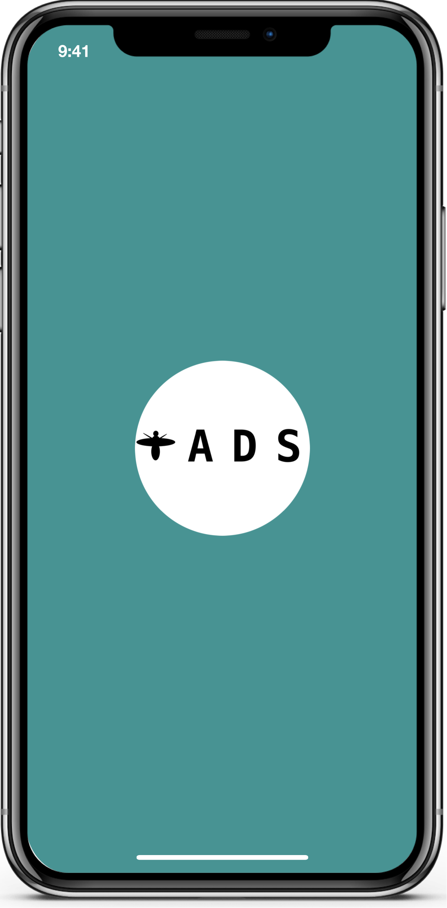
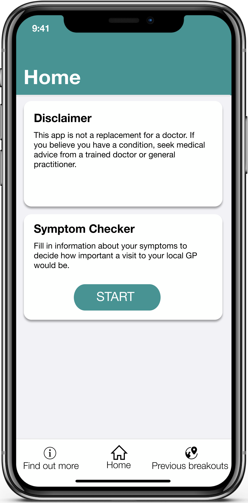

Logo screen for the application

Home screen of the application

Panel containing information about local viruses
Vectornator app iPad
30th January 2020
University of Sheffield: Global Engineering Challenge
During my first year at the University of Sheffield, I was tasked to design a solution to an issue facing the community of Johannesberg, South Africa alongside a team of engineering students.
Our given task was Automated Disease Survailance, and I designed an application which would allow residence to learn more about diseases in the local area, to recieve live medical advice based on current symptoms, and to view past data on outbreaks to understand how viruses and other diseases spread.
Logo screen for the application
Home screen of the application
Panel containing information about local viruses
Maps are used to show the previous outbreak history of particular diseases for a given time and place.

A map displays disease outbreak with a heatmap

Information screen

The application uses previous symptom data to anticipate local outbreaks
Users can input symptoms and recieve medical advice if necessary. The application does not directly diagnose users

Personal information is input into the symptom checker

Symptoms can be searched for and selected

A final feedback report is given and if necessary the nearest GP is located and presented